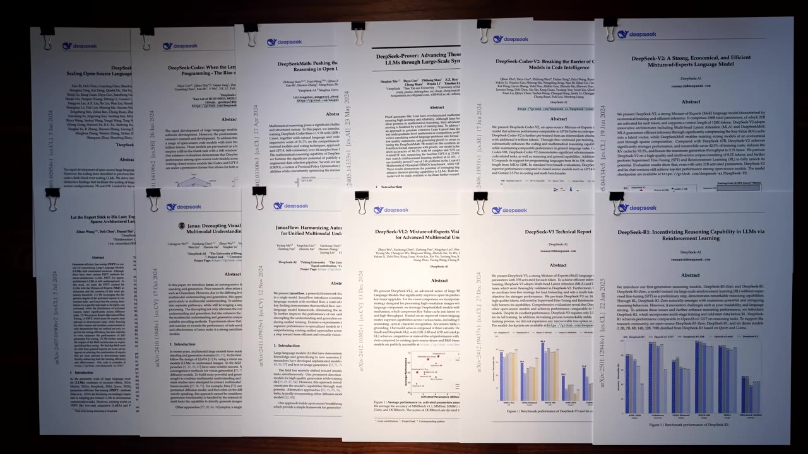
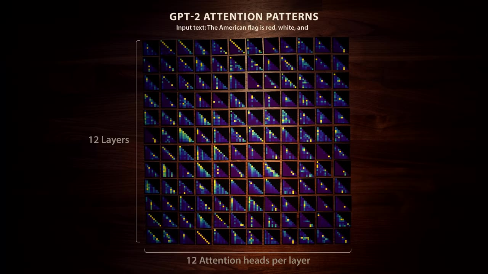
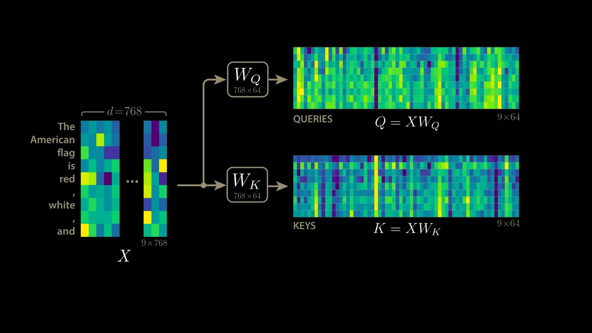
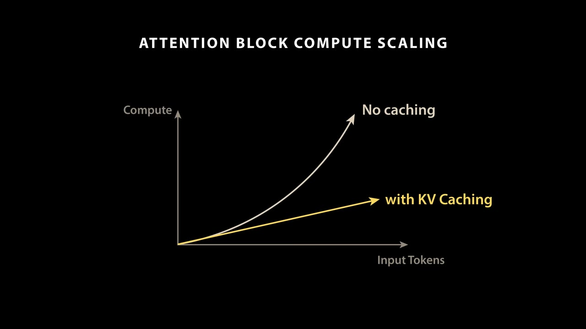
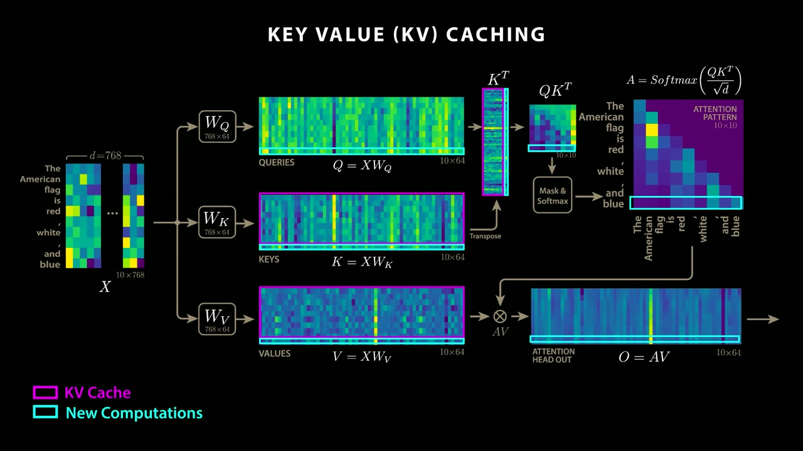
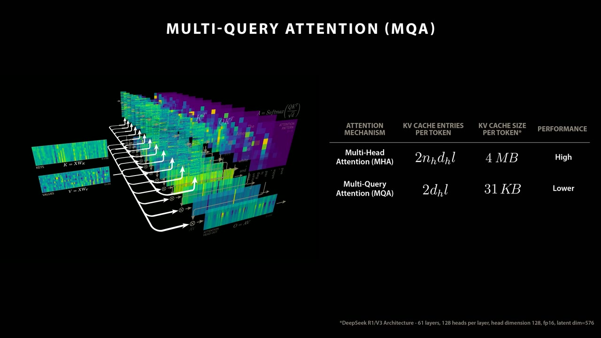
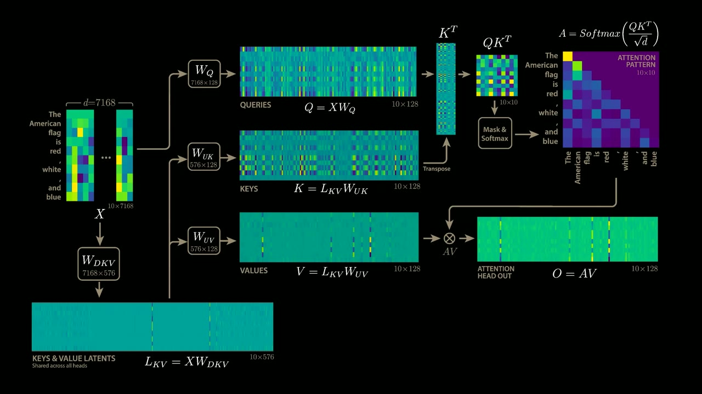
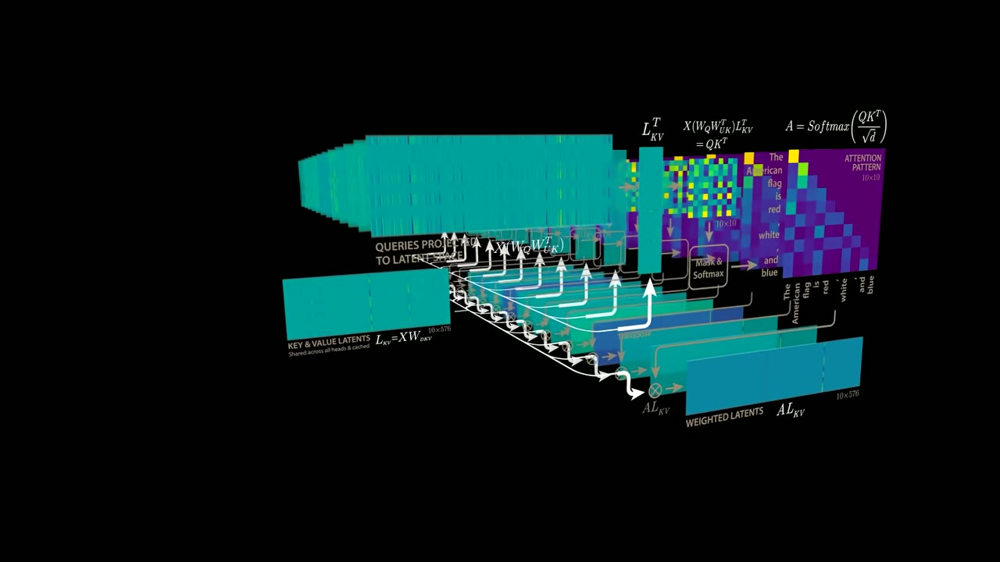

DeepSeek shrank the transformer's biggest memory bottleneck by a factor of 57 — and made the model better at the same time. Here is the linear algebra that did it.
Creator: Welch LabsRuntime: 18 minVideo published: March 5, 2025909.1K views when summarized
DeepSeek's multi-head latent attention (MLA) strikes at the core of the transformer, not its margins — it changes how attention itself stores keys and values.
The KV cache is the bottleneck: caching keys and values turns attention's cost from quadratic to linear in token count, but for DeepSeek R1 that means 4 MB read per token and ~400 GB of memory reads to generate one token at a 100k context.
Earlier fixes — multi-query and grouped-query attention — shrink the cache by sharing keys and values across heads, but pay for it with worse model performance.
MLA instead projects the input into a compressed latent space shared across heads, then projects back up to per-head keys and values, cutting the cache 57x while improving performance.
The trick that makes it free at inference: the up-projection weights get algebraically absorbed into the query and output computations, so the extra matrix multiply costs nothing once training is done.
01 · The release
DeepSeek hit the core of the transformer
In January 2025, DeepSeek's R1 matched leading language models on a fraction of the compute — and, unlike most American labs, shipped the weights, the inference code, and a steady stream of technical reports, roughly one a month through 2024. Most of DeepSeek's tricks live at the margins of the stack. Multi-head latent attention, introduced in June 2024, does not: it changes the transformer itself, the architecture nearly every large language model shares.

DeepSeek's 2024 papers, laid out end to end — the trail of incremental work that culminated in R1.00:00:27
The headline numberIn DeepSeek's implementation, MLA shrinks the key-value cache by a factor of 57, letting the model generate text more than six times faster than a vanilla transformer.
02 · Attention patterns
What attention actually computes
A language model generates one token at a time, and each new token is a function of every token before it. Attention is the mechanism that moves information between those token positions. It works by computing attention patterns — square matrices, one per head, sized to the number of input tokens. For the nine-token input "the American flag is red, white, and," every pattern is a 9x9 matrix.

GPT-2 small: 12 heads per layer across 12 layers, for 144 attention patterns. DeepSeek R1 has 128 heads across 61 layers — 7,808 patterns.00:01:42
A single head can learn a specific job. One pattern in GPT-2's third layer maps "American" onto "flag," fusing them into the concept American flag; a later head pulls "flag," "red," and "white" toward the final "and," setting up the correct next token: blue.
03 · Queries and keys
Building attention from matrices
Take the input matrix X — one row per token, one column per embedding dimension (768 for GPT-2 small, 7,168 for R1). Multiply X by two sets of learned weights, W_Q and W_K, to get the query matrix Q and key matrix K. Attention then searches for token pairs whose queries and keys point the same way.

Q = XW_Q and K = XW_K. A token like "flag" can query for its modifiers; a token like "American" produces a matching key.00:04:06
Score every pairTranspose K and multiply by Q, producing the 9x9 matrix of all key-query dot products at once.
MaskZero out the upper-right corner so a token can't peek at tokens that come after it.
NormalizeDivide by the square root of the dimension and apply softmax, so each row sums to one — that's the attention pattern.
Apply itCompute a value matrix V = XW_V, then multiply the pattern by V to take a weighted sum of values. Stack the heads and multiply by W_O for the block's output.
04 · The KV cache
From quadratic to linear
An attention pattern's size is the token count squared — a real problem when context windows run past 100,000 tokens, about the length of the first Harry Potter book. But there's a shortcut. When the model appends "blue" and re-runs on ten tokens, the first nine rows of Q, K, and V are unchanged. The masking means only the new bottom row of the pattern needs computing, and that needs all the keys but only the newest query row.

Cache the keys and values you already computed, and attention's cost stops growing as the square of the token count and grows linearly instead.00:09:57
Why cache keys and values, not queriesThe old query rows are never reused — only the newest one matters for the new bottom row. Keys and values, by contrast, are needed in full every step, so those are what you store.
05 · The cost of caching
Four megabytes per token
The shortcut trades compute for memory. The system has to hold keys and values for the entire session, across every head and every layer. For a model with L layers, NH heads, head dimension DH, and N tokens, the cache holds 2 x N x DH x NH x L numbers.

The full caching pipeline, with cached entries in magenta and the per-token new work outlined.00:10:00
The bottleneck, in numbersFor R1 at fp16 with a 100,000-token context, that's 4 MB read per token — and roughly 400 GB of memory reads to generate each new token. The cache, not the math, is the wall.
06 · Sharing keys and values
MQA and GQA pay in performance
Oversized caches predate DeepSeek, and the standard fixes share keys and values across heads. Multi-query attention uses a single shared K and V for all heads, shrinking the cache by the head count — 128 for R1 — but forcing every head onto the same keys and values kills specialization. Grouped-query attention softens that: heads share K and V within small groups. Meta's Llama 3 uses groups of eight, cutting the cache eightfold.

Multi-query attention drops the cache from 4 MB to 31 KB per token — but performance drops with it.00:13:04
Grouped query attention reduces KV cache size, but still takes a performance hit relative to full multi-head attention.— Welch Labs
07 · Multi-head latent attention
Let the model compress its own cache
DeepSeek's move borrows a familiar idea — a latent space — and applies it in a new place. MLA adds a step between each head's input and its keys and values: project the input down into a compressed latent space shared across all heads (L_KV = XW_DKV), then project that latent back up into per-head keys and values with weights W_UK and W_UV unique to each head. That up-projection is what MQA and GQA lack, and it's where the flexibility — and the performance — comes back.

The latent L_KV is shared across all heads; W_UK and W_UV expand it into each head's own keys and values. Only the latent is cached.00:15:00
What if the model could learn to efficiently compress its own keys and values?— Welch Labs
Why the extra multiply is freeThe new matrix multiply looks like it just trades memory for compute. But the up-projection weights are fixed after training, so they can be absorbed once — into the query computation (W_UK) and the output computation (W_UV). At inference, the attention pattern is read straight off the latent cache with no added work.
08 · The result
A real improvement to the transformer
With MLA, the cache no longer depends on the number of heads — only on the size of the shared latent, 576 per token for R1. Standard attention would need 4 MB per token; grouped-query attention with groups of eight, 500 KB; MLA, just 70 KB. That's the 57x.

The heads of an MLA block, all reading from one shared latent rather than caching keys and values apiece.00:16:21
The takeawayThis isn't a margin trick. R1 generates tokens more than six times faster than a vanilla transformer while scoring better — the model itself learned how to compress and share information between heads. The transformer is one of modern AI's biggest breakthroughs, and DeepSeek appears to have just made it work meaningfully better.